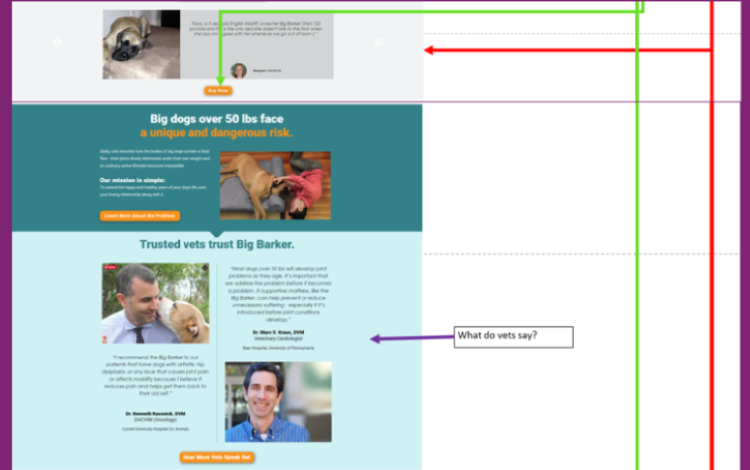

Overview
This is a ux case study of the landing page for an e-commerce website.
Meeting with stakeholders
Current website has the following errors:
* It is formatted like a newspaper article, yet the text reads like a late-night infomercial.
* The landing page continues past the initial opening.
* Large font, as well as a lot of reviews add to the length.
* Even though there is a separate page for both expert and customer's reviews, there are still additional reviews on the landing page.
Deliverables
Sketches of initial ideas
Sitemap/journey map
Wireframes
Personas
Discover
Research Methods
• User interview
• Stakeholder interview
• Requirements & constraints gathering
Activities
* User interview :
Type: semi-structured
Profiles of Interviewees: 5 participants: 3 female, 2 male; Age: 25 to 43
Required: large dog owner
* Observe people interacting with the website
* Have users walkthrough prototype.
* Discuss likes/dislikes
Explore
Research Methods
• Design review
• Persona building
• Task analysis
• Journey mapping
• Prototype feedback & testing
• Write user stories
Activities
* User research to build user personas and stories
Personas: I conducted a short survey targeted toward key demographic of dog owners to find current pain points they face in caring for their dog. I supplemented the findings with additional research available online, and found that across the board dog owners viewed their pets as an additional member of their family and prioritize trust, safety, and quality as key elements when selecting products. I used the findings to develop two personas of potential users and worked to address unique challenges each of them face. Following persona development I created a potential user journey that sought to identify points of focus when moving into app development. These would be opportunities to create a unique experience for the user and resolve areas of frustration.

* Write user stories
As a large dog owner, I want to easily purchase a supportive dog bed on the internet, so I will not have to go to the store.
* Design review
Below shows the entire landing page:


* Discuss user journey with stakeholders
Journey map

* Task analysis

- 


* Iterate designs by testing paper prototypes with users in realtime.
Hi-Def Prototyping
I made the landing page a single screen. The rest of the information was placed in the corresponding links. The following hi-def prototypes show the landing page and each link in its entirety.
Research Methods
• Qualitative usability testing
• User group outreach
• Social media monitoring
• Benchmark testing
• Accessibility evaluation
Activities
* Talk with user groups
* Check for inconsistencies
* Conduct accessibility evaluation
* Monitor social media accounts, talk with users
Listen
Research Methods
• Surveys
• Analytics review
• Usability review
Activities
* Survey customers and prospective users
* Monitor analytics and metrics to discover trends
* Analyze search queries
* Collect frequently asked questions and try to solve problems
Notes
This is an ongoing project. Disclaimer: I am not affiliated with Big Barker in any capacity.